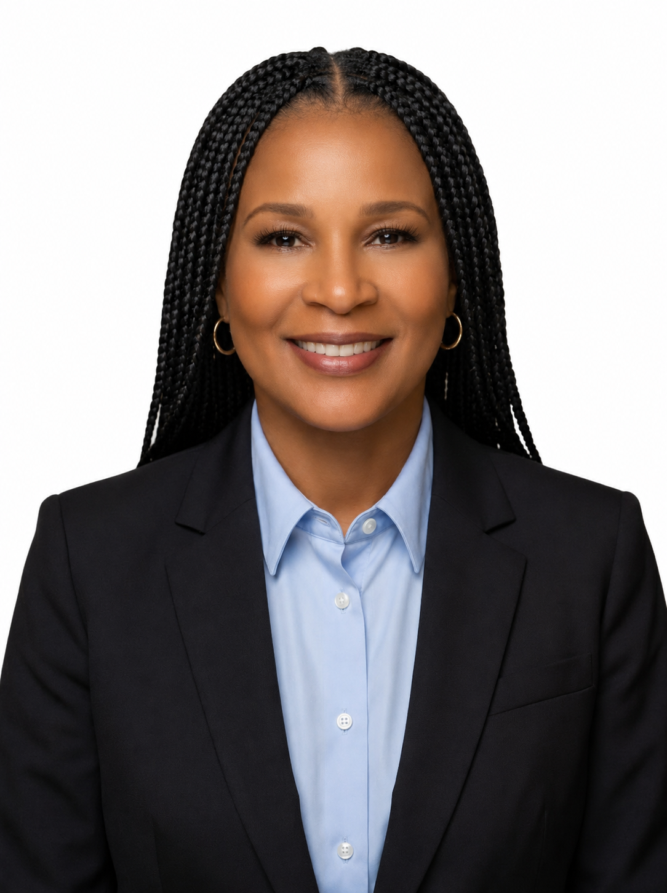

Clarity
Complexity should be understood before it is acted upon.
Marilyn D. Jackson is a U.S. Air Force veteran, technology founder, and infrastructure strategist helping organizations understand complex operational environments before they make high-stakes decisions.

Marilyn is the founder and CEO of Undergrid Networks, Inc., where she leads the development of UndergridOS, an Operational Reality platform for critical infrastructure. UndergridOS is designed to reconcile fragmented operational, asset, geographic, environmental, financial, regulatory, and organizational information into a continuously understood picture of the real world.
She founded Undergrid Networks in 2017 to support telecommunications infrastructure and the expansion of 5G. Beginning in 2019, the company secured federal contracts totaling more than $1 million and maintained federal work for five years. When the COVID-19 pandemic disrupted the telecommunications market, she reassessed the company's direction, leading to a broader strategic transformation toward critical-infrastructure intelligence and Operational Reality.
She is also the founder and CEO of Mahjee and a principal managing partner of Maroti Global. Across these ventures, Marilyn brings together business strategy, emerging technology, partnership development, and an enduring commitment to building enterprises that create practical and inclusive value.
Her perspective has been shaped by military service, entrepreneurship, market disruption, personal adversity, and repeated reinvention. Marilyn's current work explores infrastructure memory, decision provenance, consequence intelligence, responsible AI, distributed edge intelligence, operational resilience, and the modernization of essential systems.
Based in the Atlanta metropolitan area, Marilyn is available for select speaking engagements, strategic collaborations, advisory opportunities, and conversations with organizations working on serious infrastructure and technology challenges.
Marilyn's leadership perspective is grounded in mission, discipline, adaptability, and service.
Undergrid began around telecommunications infrastructure and the growth opportunity created by 5G expansion.
The company secured more than $1 million in federal contracts and supported federal customers for five years.
Market disruption led Marilyn to rethink the company's direction and develop the broader Operational Reality vision behind UndergridOS.
Marilyn leads Undergrid Networks and Mahjee and serves as principal managing partner of Maroti Global.
I have spent much of my life learning how to move through complexity: technical complexity, organizational complexity, market disruption, and personal adversity.
Those experiences shaped how I lead. I do not believe the answer to complexity is simplification for its own sake. The answer is clarity: seeing the important relationships, preserving the history behind present conditions, understanding the consequences of available choices, and giving people a trustworthy basis for action.
Across infrastructure sectors, organizations possess enormous amounts of data but still struggle to maintain a shared understanding of operational reality. Their systems can report assets, alarms, projects, costs, risks, or regulatory requirements, but rarely explain how those realities interact, how decisions were reached, or what happened afterward.
Today, I am building toward a future in which critical decisions are informed by connected evidence, institutional memory, transparent reasoning, and an understanding of consequences.
Marilyn's leadership is grounded in clarity, accountability, service, resilience, and inclusion.
Complexity should be understood before it is acted upon.
Important decisions should be explainable, traceable, and connected to their consequences.
Leadership carries an obligation to create value beyond oneself.
Adversity can become a source of sharper purpose, stronger systems, and steadier leadership.
Innovation is stronger when opportunity, expertise, and decision-making include the people and communities affected.